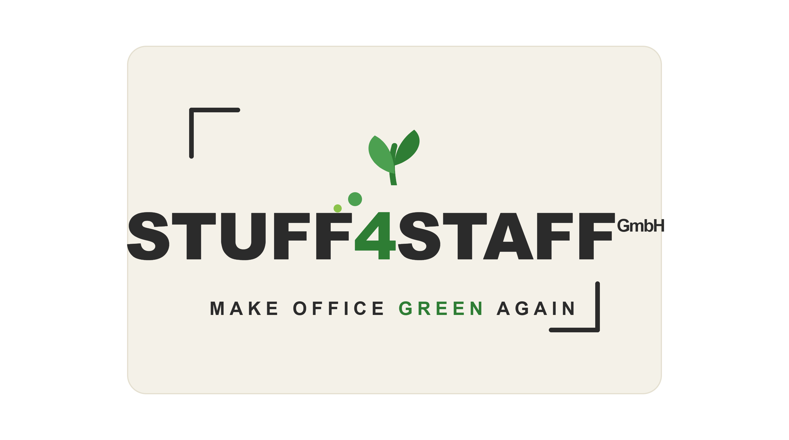
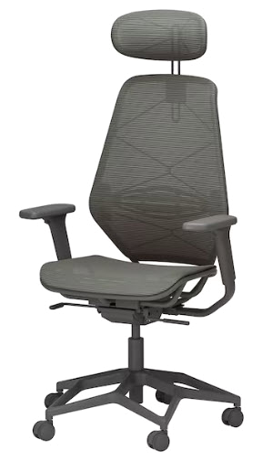
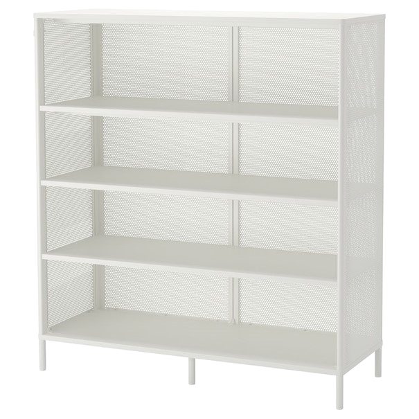
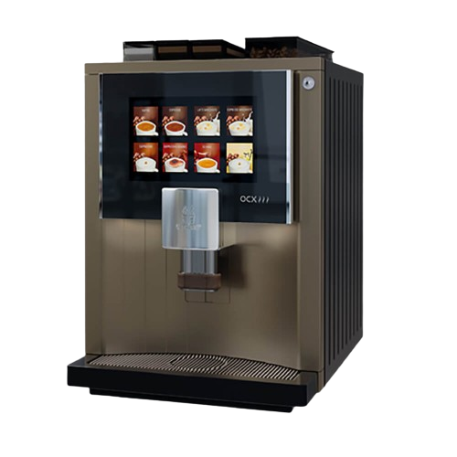
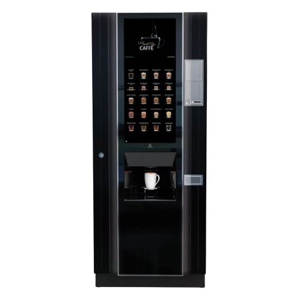

SÄULE 01
Umwelt
Regionale Produkte, geprüfte Siegel und CO₂-neutraler Versand.
Stuff4Staff wird zum nachhaltigen Büroartikelhändler — mit regionalen Produkten, geprüften Siegeln und CO₂-neutralem Versand. Unser Leitprinzip: belegbar statt behauptet.

Unser Konzept ruht auf Umwelt, Sozialem und Wirtschaft — als gemeinsame Basis für eine glaubwürdige ÜFA-Zertifizierung.
Regionale Produkte, geprüfte Siegel und CO₂-neutraler Versand.
Faires Miteinander, Teamarbeit und respektvoller Umgang.
Verantwortungsvolles Wirtschaften als Basis für die ÜFA-Zertifizierung.
Jede Maßnahme muss nachweisbar sein — ein Zertifikat lebt von Belegen, nicht von Behauptungen.
Klare, nachweisbare Maßnahmen entlang der gesamten Wertschöpfung: was wir einkaufen, wie wir versenden und wie wir täglich arbeiten.
CO₂ neutral zugestellt. Als Geschäftskunde fordert Stuff4Staff das Zertifikat der Österreichischen Post an und führt das Logo sichtbar auf Sendungen und Website.
Ausgewählte Produkte, die unser Leitbild greifbar machen: Komfort, Qualität und ein gutes Gewissen für den modernen Büroalltag.

Atmungsaktiver Netzrücken, Kopfstütze und Wippmechanik — gesundes, dynamisches Sitzen den ganzen Tag.
Langlebig & ergonomisch
Robustes, offenes Büroregal — zeitlos und vielseitig. Voll reparierbar statt Wegwerfmöbel.
Robust & reparierbar
Barista-Vielfalt per Touchscreen — frisch gebrüht fürs ganze Büro, jederzeit per Knopfdruck.
Mehrweg statt Einweg
Zuverlässiger Vollautomat für Kaffee, Tee & Co. — Self-Service rund um die Uhr.
Effizient & langlebigIm Übungsfirmen-Netzwerk bestellen: Das vollständige Sortiment findest du im Marketplace-Shop.
Zum ShopEin Team aus neun Schülerinnen und Schülern der HAK Kirchdorf an der Krems — mit dem Versprechen CO₂-neutraler Zustellung.
Eine Evolution des bestehenden Logos: voller Wiedererkennungswert, aber klar nachhaltig positioniert.
Nachhaltigkeit ist für uns kein Selbstzweck — sie zahlt direkt auf Zertifizierung, Markenprofil und Glaubwürdigkeit ein.
Trifft die Kriterien Innovation, Kundenorientierung & Digitalisierung.
„Nachhaltig + österreichisch" als klares Alleinstellungsmerkmal.
Viele Maßnahmen kosten fast nichts — wirken aber sofort.
Alles belegbar — null Risiko, volle Glaubwürdigkeit.
Fünf bewusst kleine, machbare Schritte, mit denen wir sofort starten.
Gemeinsam machen wir den Büroalltag gesünder, regionaler und nachhaltiger — belegbar, nicht behauptet.